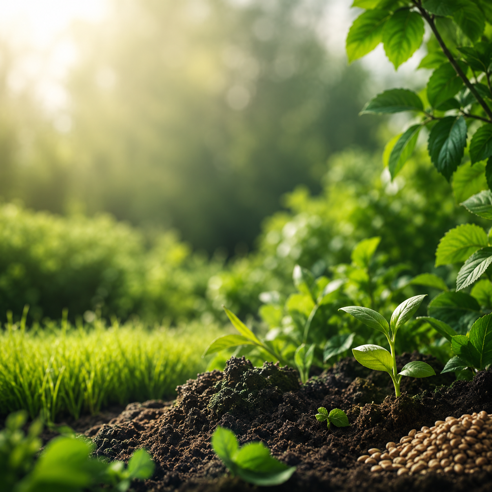

Eco Yard Supply
Duurzame voeding voor een gezonde tuin
Ecologische meststoffen, graszaad en aanplantgrond voor hoveniers en particuliere tuinliefhebbers.
Met insectenmest van Dungking kiest Eco Yard Supply voor een krachtige, natuurlijke bodemverbeteraar die de bodem voedt, de groei versterkt en helpt resultaat te behalen.

97%
ecologisch
kenmerk van Dungking insectenmest
Versterkt de groei
Verzekert resultaat
Over Eco Yard Supply
Persoonlijk advies voor duurzame tuingroei
Eco Yard Supply helpt hoveniers en particuliere tuinliefhebbers met duurzame producten voor bodem, gazon en aanplant. We denken mee, geven advies op maat en leveren producten die passen bij een gezonde, toekomstbestendige tuin.
Of het nu gaat om professioneel gebruik in groenprojecten of om een particuliere tuin: Eco Yard Supply kijkt graag mee naar een passende oplossing.
Waar we op sturen
- Advies op maat voor bodem, gazon en aanplant
- Duurzame productkeuze met praktische toepassing
- Voor professional en particulier bereikbaar
Producten
Producten voor bodem, gazon en aanplant
Een sterke tuin begint bij een gezonde basis. Daarom levert Eco Yard Supply producten die bijdragen aan bodemleven, groei en herstel.
Insectenmest van Dungking
Een ecologische meststof die de bodem voedt en het bodemleven ondersteunt. Met een 97% ecologische samenstelling is dit een duurzame keuze voor tuin en groenvoorziening.
Vraag naar beschikbaarheidGraszaad
Voor het herstellen, verbeteren of nieuw aanleggen van gazons. Geschikt voor toepassingen waarbij een sterke en verzorgde grasmat gewenst is.
Binnenkort verkrijgbaarAanplantgrond
Een goede basis voor sterke wortels en gezonde groei van nieuwe beplanting. Ideaal bij het aanplanten van bomen, struiken, hagen en borders.
Vraag naar de mogelijkhedenVoor hoveniers
Voor hoveniers die duurzaam resultaat willen leveren
Eco Yard Supply richt zich in het bijzonder op hoveniers die hun klanten een duurzame en effectieve oplossing willen bieden. We denken graag mee over toepassing, productkeuze en praktische inzet in tuinen en groenprojecten.
- Advies op maat
- Geschikt voor professioneel gebruik
- Duurzame productkeuze
- Praktisch toepasbaar in tuinen en groenprojecten
- Ook toegankelijk voor particuliere klanten
Startfase
Net gestart, met volle focus op kwaliteit en advies
Eco Yard Supply bouwt stap voor stap aan een zorgvuldig productaanbod. In deze startfase ligt de nadruk op persoonlijk contact, duidelijke informatie en advies dat past bij de situatie van de klant.
Contact
Klaar om je bodem duurzaam te voeden?
Neem contact op voor advies, productinformatie of beschikbaarheid. Eco Yard Supply denkt graag met je mee.
- info@ecoyardsupply.nl
- Telefoon
- [telefoonnummer toevoegen]
- Regio
- [regio toevoegen]